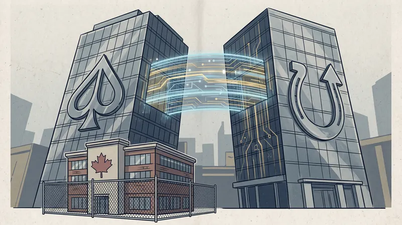

By Alex Drummond, Editor-in-Chief · April 29, 2026 · Fact-checked by Maya Chen

The first hard date in PokerStars Ontario's planned move to a FanDuel-branded poker client is now six days away. On May 5, the operator will withdraw progressive jackpots from the Ontario casino product, the earliest visible step in a migration that will eventually retire the legacy PokerStars desktop and mobile clients in the province and replace them with a unified FanDuel-branded platform.
Flutter Entertainment, the London-listed parent of both PokerStars and FanDuel, confirmed the consolidation on March 3 and rolled the first round of changes through the U.S. operations during March and early April. New Jersey, Pennsylvania and Michigan players have already seen their PokerStars Rewards loyalty programme retired and their progressive jackpots removed; the new "PokerStars Exclusively on FanDuel" client is expected to go live in the U.S. tri-state market later this year. Ontario's timetable runs in parallel but trails the U.S. rollout, and the May 5 jackpot retirement is the first event Flutter has put on the public record for the province.
What May 5 Actually Changes
The immediate change on May 5 is small, and it does not touch the poker client at all. Progressive jackpots in PokerStars Ontario casino games will stop accepting contributions, jackpot pools will be returned to players proportionally, and the casino lobby will lose the slot titles that are tied to network-wide progressives. Cash games and tournaments at the poker tables will keep running on the existing PokerStars Ontario software with no interruption.
The mechanics of the May 5 step matter for two reasons. The first is housekeeping: progressive jackpots tied to a global network must be wound down before any branded migration can take place, because Ontario player contributions sit inside a wider Flutter pool that does not align with the new FanDuel architecture. The second is signalling. Removing the most network-dependent product first tells operators inside the province that the back-end work needed to move PokerStars Ontario onto FanDuel infrastructure is well advanced.
Flutter has not published a specific date for the retirement of PokerStars Ontario Rewards, but the U.S. precedent is March 13 in the three states that ran on the standalone PokerStars network. Industry analysts in Toronto expect the Ontario equivalent to land sometime in late summer or early autumn, with the new client following a few months later. The full migration is targeted for completion before the end of 2026.
The U.S. Liquidity Reset
Across the border, the consolidation is doing something Ontario players will not get: pooling player liquidity. Flutter's stated goal in the U.S. is to bring Pennsylvania into a shared network that already connects New Jersey and Michigan, producing a tri-state pool that should drive larger guarantees, faster cash-game seating and more consistent peak-hour traffic. The unified one-wallet system that comes with the new platform will let U.S. customers move funds between poker, casino and the FanDuel sportsbook without separate transfers.
The U.S. reset will be the largest single change in regulated American online poker liquidity since New Jersey, Nevada and Delaware first connected in 2018. The combined population of New Jersey, Pennsylvania and Michigan is roughly 33 million people, and once the merger is complete, every PokerStars and FanDuel customer in those states will be playing in one pool. Tournament prize pools that today top out around US$200,000 on a typical Sunday in any one state should grow several-fold inside the new network.
None of that liquidity will reach Ontario.
Why the Ontario Player Pool Stays Walled Off
The framework set out by the Alcohol and Gaming Commission of Ontario and iGaming Ontario, the province's stand-alone Crown agency, requires every operator to run a dedicated client in which only players physically located in Ontario can compete. The model has been in place since the regulated market opened in April 2022. PokerStars Ontario, GGPoker Ontario, 888poker Ontario, BetMGM Poker, PartyPoker Ontario and Bwin Ontario all built bespoke local clients to satisfy that requirement, and the rest of the global player base was kept out.
The November 2025 Ontario Court of Appeal ruling on shared liquidity cleared the constitutional path for a future change. The four-to-one decision found that the province may legally allow its regulated operators to seat local players against international opponents in peer-to-peer games such as online poker, provided Ontario retains "actual operational control and responsibility" over the gaming product. AGCO and iGaming Ontario have indicated that they are studying the implications of the judgment, but the regulator has not committed to a timetable. The Canadian Lottery Coalition, which intervened against the province's position, has signalled it will seek leave to appeal to the Supreme Court of Canada, and last week the SCC granted Alberta intervener status in the same matter.
The result is that the new Flutter platform, even after the migration is complete, will operate two separate poker liquidity environments in North America: one tri-state pool for U.S. players in New Jersey, Pennsylvania and Michigan, and one Ontario-only pool for players physically located in the province. There will be a single wallet inside Ontario, and there will be a single PokerStars-branded client. There will not be a single tournament that crosses the border in either direction.
The Practical Effect Inside the Province
For players who use PokerStars Ontario, the practical effect of the migration is largely cosmetic. The lobby and client will eventually look like a FanDuel product, the rewards programme will reset under the unified Flutter scheme, and customers who already hold a FanDuel sportsbook account in Ontario will be able to consolidate funds into a single wallet across poker, casino and sports.
The structural realities will not change. Ontario's PokerStars client today serves an estimated 60,000 to 80,000 monthly active players based on the regulator's published market data. Trailing 13-month iGaming Ontario reports show online poker generating an average of C$5.9 million in monthly gross gaming revenue across all six rooms combined, on roughly C$141 million in monthly cash wagers. The PokerStars share of that pool is the largest single piece, but it is still a small product line by global standards. The FanDuel migration will not change that arithmetic; it will only repackage it.
The C$750,000 PokerStars Ontario Bounty Builder Series in March was widely reported as the last full-scale festival on the legacy client. PokerStars Ontario continues to run weekly Sunday Major and weeknight tournaments through the spring; an ONSCOOP-equivalent series for the new client has not yet been confirmed. The PokerStars dot-com platform's US$50 million Anniversary Series, which opens on May 10, is not available in Ontario, in line with the same ring-fencing rules that have applied for four years.
Where Competitors Sit
The Flutter consolidation reshapes the competitive landscape inside Ontario in modest ways. GGPoker Ontario remains the largest poker product in the province by traffic and tournament guarantees, with the local edition of the Bounty Hunters Series ending on April 27 with C$2 million in guarantees and the GGPoker Ontario World Festival schedule expected to follow this week. 888poker Ontario continues to run a smaller, dedicated tournament schedule and has not announced an Ontario equivalent of its global XL Spring Series.
The shared MGM-Entain network in Ontario, branded as BetMGM Poker, PartyPoker Ontario and Bwin Ontario, sits in third place by traffic and continues to offer a single back-end with three branded skins. Flutter's consolidation of PokerStars under the FanDuel banner is in some ways a delayed answer to the same playbook: rather than running two separate brands inside the province, Flutter will eventually carry one wallet and one platform.
The Forward Calendar
The next concrete Ontario milestone after May 5 will be the announcement of a date for the closure of PokerStars Ontario Rewards and the public preview of the new FanDuel-branded poker lobby. Neither has been disclosed. Flutter has indicated only that the full launch of "PokerStars Exclusively on FanDuel" will happen "later in 2026" and that customer funds and accounts will move automatically.
If AGCO and iGaming Ontario act on the November Court of Appeal ruling before the migration completes, the FanDuel-era PokerStars client could become the first Ontario-licensed poker product to plug into a multi-jurisdiction shared-liquidity network. That would require a formal regulatory programme that does not yet exist, agreement on cross-border operational control and, most likely, an inter-provincial agreement with at least one other Canadian market. Industry observers continue to set 2027 as the earliest plausible date for any such launch.
For now, the migration is a re-skinning exercise. PokerStars Ontario is moving onto a new platform with new branding and a unified wallet, and the player pool is staying exactly where it has been since 2022, on the Ontario side of a regulatory wall that the Court of Appeal has agreed could come down but the regulator has not yet decided to remove.